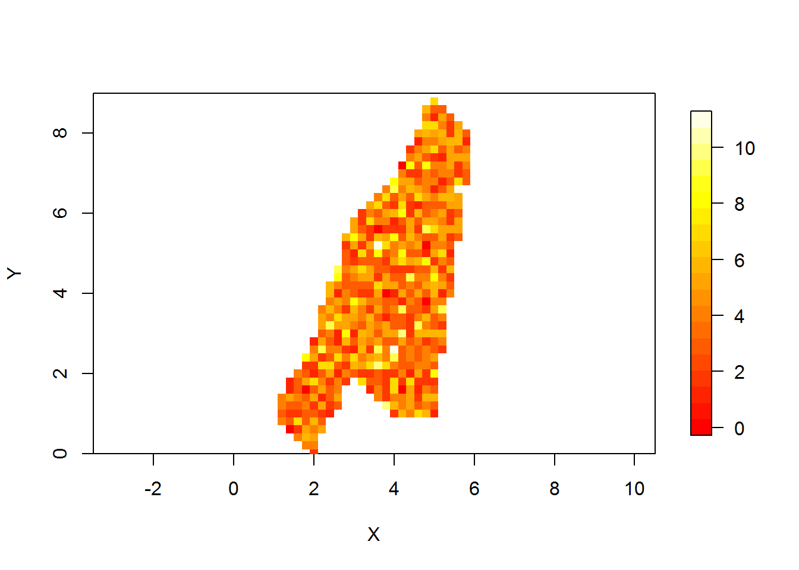
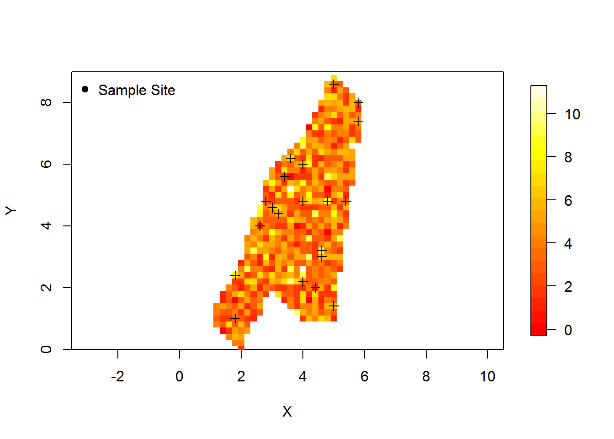
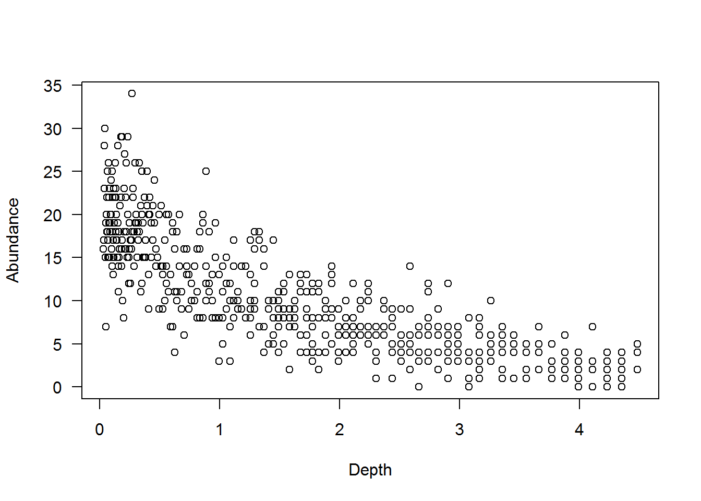
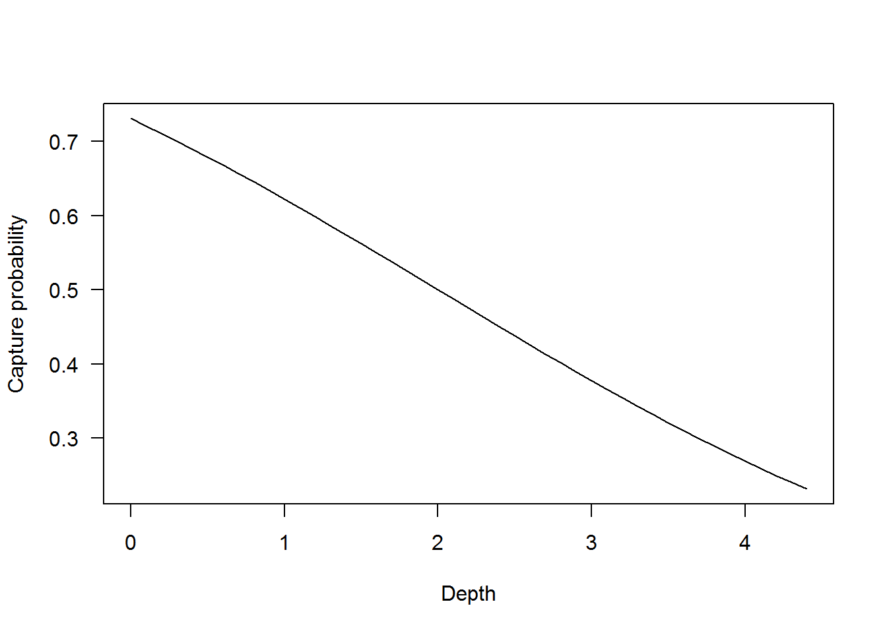

Class 17: Influence diagrams & N-Mixture models
1 Class preliminaries
- Supplemental background reading for next class(es):
- Conroy and Peterson Chapter 6 and 7.
- Powell and Gale Chapter 17.
- Assignment due: None
- Class project:
- Be developing your decision model
- Final exam period-April 28th at 3pm.
- Link to class recording YouTube
- Today’s R script Class-17.R
1.1 Class overview & objectives
- Review final project
- Review decision models
- Influence models
- Sensitivity analysis
- Response profiles
- Estimating abundance: N-Mixture models
1.2 Getting ready to go
- The R scipt for class can be found here
- Once you have the script where you want it it where you want open the R script and be sure to check the working directory
getwd()and make sure it is where your folder is. - If your working directory is not correct, you can set it in Rstudio: “Session –> Set Working Directory –> To source file location”. Or you can use the
setwd()in the console - The data used today can be downloaded here Rdata
- You will want to install the following packages
#install.packages("reshape2")
#install.packages("unmarked")
#install.packages("fields")2 N-Mixture models
2.1 Overview
Traditionally metrics like catch per unit effort (CPUE) would be used for comparisons (i.e., is cpue higher in one habitat relative to another). Comparing CPUE requires many assumptions as it relates to catchability (\(q\)), where Catch is \(C = q\cdot f \cdot abundance\). Recent advances in N-mixture models relaxes this assumption by estimating capture probability for each site. One thing to note is that capture probability and catchability are not the same thing. Caveats aside the N-mixture provides a method to estimate density, accounting for imperfect capture. The gist of the approach is to repeatedly sample a site. The number of critters captured is a function of the underlying density and capture probability. For example if there were 100 critters at a site and your gear had a capture probability of 0.8 and then you sampled that site 5 times, you would expect to capture approximately 80 critters each time. In reality the data might look like this: 81 74 85 82 70,this is essentially a capture history but with counts instead of 0s and 1s. Because there was temporal replicates one can estimated a capture probability.
As it relates to habitat, the model may give the ability to estimate the density of hard to capture critters and the ability to compare among habitats. The design is not that different from what would occur for typical fishery or wildlife surveys, sample sites are randomly selected within an habitat and then repeated sampling is conducted to get the count history.
2.2 Application to estimating abundance
2.2.1 What a hypothetical IRC might look like
Suppose there is an area with a spatial domain, study area, that looks like the image below. The blue represents depth (darker = deeper).
load("study-area.Rdata")
library(fields)## Warning: package 'fields' was built under R version 3.1.3## Loading required package: spam## Warning: package 'spam' was built under R version 3.1.3## Loading required package: grid## Spam version 1.3-0 (2015-10-24) is loaded.
## Type 'help( Spam)' or 'demo( spam)' for a short introduction
## and overview of this package.
## Help for individual functions is also obtained by adding the
## suffix '.spam' to the function name, e.g. 'help( chol.spam)'.##
## Attaching package: 'spam'## The following objects are masked from 'package:base':
##
## backsolve, forwardsolve## Loading required package: maps## Warning: package 'maps' was built under R version 3.1.3##
## # maps v3.1: updated 'world': all lakes moved to separate new #
## # 'lakes' database. Type '?world' or 'news(package="maps")'. #library(reshape2)## Warning: package 'reshape2' was built under R version 3.1.3image.plot(x,y,z,xlim=c(0,7),
xlab="X",ylab="Y",
ylim=c(0,9),
col=rainbow(n=20,start=3/6,end=4/6),
asp=1) 
Suppose that within the polygon above the true density of critters is 4
per square meter (i.e., \(\lambda = 4\) in N-mixture jargon). Applying that density to the polygon, the one realization of teh density of critters may look like the figure below. Recall we are using rpois so this is one stochastic realization.

Using the framework, a survey can sample sites within the habitat. Suppose 20 randomly selected sites were used. That would look like the image below.

2.3 Estimating abundance
Using the 20 samples abundance can be estimated using an N-mixture model, given some assumptions. Variables estimated by the N-mixture model are:
- \(\lambda\) is initial population density
- \(p\) is capture probability
Specifically the process model is:
\[N_{i} \sim Poisson(\lambda)\]
and
\[y_{i,k}~binomial(N_{i},p)\]
and
\[log(\lambda) = \beta_0\]
and
\[logit(\p) = \gamma_0\]
where
- \(N_{i}\) is the predicted count,
- \(\lambda\) is the underlying density,
- \(y_{i,t}\) is the number of critters observed at site \(i\) at time \(t\),
- \(p\) is capture probability,
- \(i\) indexes each randomly selected site,
- \(k\) indexes each visit,
- \(\beta_0\) is the intercept of the linear model predicting the log abundance, and
- \(\gamma_0\) is the intercept of the linear model predicting the log odds of capture probability.
The assumptions for the model above included:
- Counts are independent among site \(i\) and visit \(k\),
- Capture probability is homogenous, and
- \(N\) is the true underlying count at site \(i\)
- Populations closed between surveys
2.3.1 No covariates: \(\lambda\) and \(p\) homogenous
The sampling design in the plot above illustrates how the design might play out in an IRC habitat. Each site would be visited 2 or more times either within a day or within a time period that is sufficiently short, such that demographic closure can be assumed. The process assumes temporal replicates, however spatial replicates have been used with occupancy models, so it is suggestive that it might work for N-mixture models. This first analysis assumes there is no underlying relationship with abiotic or biotic covariates such as depth on abundance or capture probability, i.e., density arises from a Poisson process.
The code below generates catches at 20 sites over 5 occasions given the abundance at the site and a capture probability (\(p\)) = 0.4.
nsamples<- 50 # i = 1,2,3,...20
beta_0<- 1.386 # UNDERLYING DENSITY
gamma_0<- -0.405 # LOG ODDS CAPTURE PROBABILITY
# TRANSFORM TO REAL VALUES
lambda <- exp(beta_0)
lambda## [1] 3.998823p<- exp(gamma_0)/(1+exp(gamma_0) )
p## [1] 0.4001116# SIMULATE ABUNDANCES
set.seed(1985)# FOR REPRODUCABILITY; LAST YEAR DLR WAS IN VAN HALEN
sa$N<- rpois(nrow(sa),lambda)
# GENERATE CAPTURE HISTORIES
visits<-5 # k = 1,2,3,4,5
# MATRIX TO HOLD VALUES
y<- matrix(0,nrow(sa),visits) # matrix for all possible sites
for(i in 1:nrow(sa))
{
for(k in 1:visits)
{
y[i,k]<- rbinom(1,sa$N[i],p)#obs count for visit k and site i
}
}The simulated counts at each of the 50 sites for 5 visits is shown below.
sample_indx<- sample(1:nrow(sa),nsamples,replace=FALSE)
obs<- y[sample_indx,]
obs## [,1] [,2] [,3] [,4] [,5]
## [1,] 1 1 3 2 3
## [2,] 0 1 0 2 1
## [3,] 1 2 1 0 1
## [4,] 1 2 1 2 2
## [5,] 1 0 1 0 0
## [6,] 1 0 1 1 2
## [7,] 1 1 1 0 1
## [8,] 1 1 2 1 1
## [9,] 5 2 3 4 5
## [10,] 3 3 0 2 2
## [11,] 1 1 3 2 1
## [12,] 3 3 2 2 2
## [13,] 3 4 5 4 3
## [14,] 3 3 1 0 2
## [15,] 3 3 3 2 2
## [16,] 0 4 3 2 3
## [17,] 0 1 0 0 1
## [18,] 1 2 2 1 0
## [19,] 1 2 1 1 3
## [20,] 2 2 0 2 3
## [21,] 3 0 3 1 0
## [22,] 1 0 1 3 2
## [23,] 2 0 2 4 1
## [24,] 2 4 4 1 2
## [25,] 1 2 1 0 1
## [26,] 3 3 3 2 1
## [27,] 3 1 1 2 1
## [28,] 2 0 2 3 0
## [29,] 2 3 1 4 1
## [30,] 3 2 1 1 1
## [31,] 2 2 3 3 1
## [32,] 1 2 1 2 0
## [33,] 2 1 3 1 1
## [34,] 0 1 2 1 0
## [35,] 2 0 2 0 2
## [36,] 1 1 2 1 1
## [37,] 2 2 2 3 2
## [38,] 1 2 1 2 1
## [39,] 0 3 2 1 1
## [40,] 3 1 3 2 1
## [41,] 0 1 1 2 0
## [42,] 2 3 2 4 4
## [43,] 2 0 1 2 1
## [44,] 2 1 1 1 1
## [45,] 0 1 2 1 1
## [46,] 1 1 1 1 0
## [47,] 3 4 3 5 2
## [48,] 0 1 0 0 2
## [49,] 3 2 3 0 3
## [50,] 1 2 1 1 1The data in the table above is then used to estimate \(\lambda\) and \(p\) using the N-mixture model. This is done using the pcount() function from the unmarked library. Note there was some manipulation of the data using the unmarkedFramePCount() function to process the input data prior to fitting the model.
# Prepare data
library(unmarked)## Warning: package 'unmarked' was built under R version 3.1.3## Loading required package: reshape##
## Attaching package: 'reshape'## The following objects are masked from 'package:reshape2':
##
## colsplit, melt, recast## Loading required package: lattice## Warning: package 'lattice' was built under R version 3.1.3## Loading required package: Rcpp## Warning: package 'Rcpp' was built under R version 3.1.3##
## Attaching package: 'unmarked'## The following object is masked from 'package:spam':
##
## mledata <- unmarkedFramePCount(y = y)
# ~DETECTION ~ ABUNDANCE
fit <- pcount(~1 ~ 1,
data=data,
K=50) # SET THIS HIGHER THAN YOUR EXPECTED ABUNDANCE
summary(fit)##
## Call:
## pcount(formula = ~1 ~ 1, data = data, K = 50)
##
## Abundance (log-scale):
## Estimate SE z P(>|z|)
## 1.32 0.0407 32.5 3.38e-231
##
## Detection (logit-scale):
## Estimate SE z P(>|z|)
## -0.345 0.0615 -5.62 1.94e-08
##
## AIC: 7574.544
## Number of sites: 524
## optim convergence code: 0
## optim iterations: 38
## Bootstrap iterations: 0Once the model is fit and estimates are returned, the estimates are then back transformed from log and logit scale for abundance and capture probability respectively.
# Density
lambda## [1] 3.998823exp(coef(fit)[1]) # should be close to lambda## lam(Int)
## 3.752949# Capture probability
p## [1] 0.4001116exp(coef(fit)[2])/(1+exp(coef(fit)[2])) # should be close p## p(Int)
## 0.4145342After fitting the N-mixture model the estimate of \(\lambda\) was 3.75, recall that the value used to generate the data was 3.9988227 and the estimate of \(p\) was 0.41, recall the that value used was 0.4001116. The estimates should be in the ballpark.
2.3.2 Covariates for \(\lambda\) and \(p\)
The no covariates for \(\lambda\) and \(p\) is a rather unrealistic condition in nature. This example shows how a biologically relevant metric like depth can be used to model abundance and capture probability. Note that this example assumes there is a true underlying relationship with the abundance and capture probability of the critter and depth. Recall the figure above of the hypothesized study area with varying depths. Suppose abundance was inversely related to depth within and study area and that relationship is illustrated below. Formally we change the equation predicting \(\lambda\) to
\[log(\lambda) = \beta_0 + \beta_1 \cdot Depth\]
where
- \(\lambda\) is the underlying density,
- \(\beta_0\) is the intercept of the linear model predicting the density, and
- \(\beta_1\) is the effect of depth on abundance.

The effect of depth on abundance within the study area is negative, indicating critter abundances are higher at lower depths. This underlying density relationship might look like the figure below where the expected density is
\[N \sim Poisson(exp(\beta_{0} + \beta_{1} \cdot depth))\],
where * \(\beta_{0} =\) 3, and \(\beta_{1} =\) -0.5.
The actual abundance for each site given the depth is simulated and illustrated below.

Similarly, capture probability can be related to depth or some other environmental covariate. Suppose that capture probability was a function of depth, this might be the case when using a seine and it might be very difficult to fish the deep areas, just a hypothetical example here. This relationship might look like the figure below where the capture probability is
\[logit(p) = \gamma_{0} + \gamma_{1} \cdot depth\],
where
- \(\beta_{0} =\) 1, and
- \(\beta_{1} =\) -0.5.

Using the relationship of \(p\) and depth and the abundance at each site the capture histories can be generated accounting for site-specific depth and capture probability.
# GENERATE CAPTURE HISTORIES
visits<-5
p<- exp(gamma_0+gamma_1*sampleSites$depth)/
(1+exp(gamma_0+gamma_1*sampleSites$depth))
y<- matrix(0,nsamples,visits)
for(i in 1:nsamples)
{
y[i,]<- rbinom(visits,sampleSites$abundance[i],p[i])
}The simulated catch at each of the 40 sites for 5 occasions is shown below.
## [,1] [,2] [,3] [,4] [,5]
## [1,] 16 14 16 11 13
## [2,] 6 6 6 3 5
## [3,] 5 7 3 6 5
## [4,] 2 5 1 6 3
## [5,] 12 9 7 11 11
## [6,] 1 3 2 4 2
## [7,] 4 4 3 2 2
## [8,] 4 5 7 6 4
## [9,] 1 0 3 1 2
## [10,] 12 13 12 15 14
## [11,] 5 4 5 4 6
## [12,] 2 0 0 1 1
## [13,] 17 16 18 20 15
## [14,] 1 0 1 0 1
## [15,] 3 1 1 1 3
## [16,] 7 7 8 10 7
## [17,] 4 2 2 3 1
## [18,] 2 4 4 2 2
## [19,] 1 1 2 1 1
## [20,] 6 4 4 4 4
## [21,] 3 4 4 3 4
## [22,] 7 4 4 3 2
## [23,] 3 1 2 3 0
## [24,] 1 0 1 0 0
## [25,] 2 3 3 2 1
## [26,] 19 18 17 18 19
## [27,] 18 20 20 17 15
## [28,] 14 13 15 18 17
## [29,] 1 2 4 3 3
## [30,] 5 4 2 2 1
## [31,] 1 0 2 0 1
## [32,] 2 3 2 3 4
## [33,] 5 6 4 5 5
## [34,] 5 9 9 5 7
## [35,] 10 13 10 11 12
## [36,] 4 5 3 4 2
## [37,] 3 3 4 1 1
## [38,] 4 2 2 0 1
## [39,] 3 5 4 5 5
## [40,] 0 1 3 2 1The model is fit as before, but with 4 estimates produce 2 intercepts and 2 betas for the the relationship of depth on \(\lambda\) and \(p\).
# PREPARE DATA
data <- unmarkedFramePCount(y = y,
siteCovs=data.frame(depth=sampleSites$depth))
# FIT THE MODEL WITH DEPTH AS A COVARIATE FOR LAMBDA AND P
fit <- pcount(~depth +1 ~depth+1,
data=data,
K=150)
fit##
## Call:
## pcount(formula = ~depth + 1 ~ depth + 1, data = data, K = 150)
##
## Abundance:
## Estimate SE z P(>|z|)
## (Intercept) 2.99 0.1194 25.04 1.99e-138
## depth -0.46 0.0913 -5.04 4.74e-07
##
## Detection:
## Estimate SE z P(>|z|)
## (Intercept) 1.145 0.275 4.16 3.19e-05
## depth -0.545 0.148 -3.69 2.24e-04
##
## AIC: 743.9707After fitting the N-mixture model the estimate of \(\beta_{0}\) and \(\beta_{1}\) a was 2.99 and -0.46, recall that the value used to generate the data was 3 and -0.5 for the relationship of abundance with depth. The estimate of \(\beta_{0}\) and \(\beta_{1}\) for the function relating capture probability to depth was 1.15 and -0.54, recall the that value used was 1 and -0.5.
Ignoring uncertainties for the moment, we can estimate the total abundance given depth at each location in the study area as \(N = \sum_{i=1}^{I} exp(2.99 \cdot -0.46 \cdot depth_{i})\), where \(i\) indexes each grid in the study area.
The image below illustrates the true abundances for a simulated study area and the estimated abundances.

Using the predictions the estimate of abundance in the study area is 5522 and the true abundance was 5395. There are design aspects where fine tuning can occur, such as modifying the number of replicates to take or how many sites to sample and where to put them.